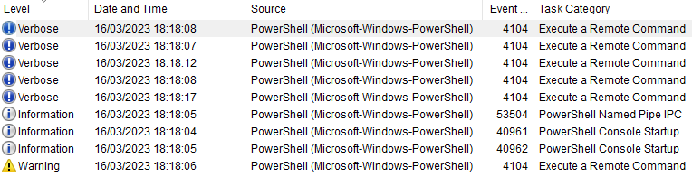

write up - fcsc 2023
About this
I did some challenges from the France Cybersecurity Challenge of this year, so here just 2 write ups (cuz I may not be really good at explaining how to solve shit). I didn’t solved any tricky chall due to my lack of implication in the CTF, but some of them were pretty fun though, so thanks to the organizers.
I finished 618/1364 on global ranking, and 67/188 on junior ranking.
La gazette de Windows
Category: Reverse (intro) Description:
Il semblerait qu'un utilisateur exécute des scripts Powershell suspects sur sa machine. Heureusement cette machine est journalisée et nous avons pu récupérer le journal d'évènements Powershell. Retrouvez ce qui a été envoyé à l'attaquant.
SHA256(Microsoft-Windows-PowerShell%4Operational.evtx) = 770b92f7c98ffb708c3e364753ee4bb569ccc810dd5891cbaf1363c2063ddd78.
As we open the file Microsoft-Windows-PowerShell4Operational.evtx in Event Viewer (.evtx being the extension for Windows Event Viewer log-files), we encounter a few events :

One of them contains the following piece of PowerShell code:
$l = 0x46, 0x42, 0x51, 0x40, 0x7F, 0x3C, 0x3E, 0x64, 0x31, 0x31, 0x6E, 0x32, 0x34, 0x68, 0x3B, 0x6E, 0x25, 0x25, 0x24, 0x77, 0x77, 0x73, 0x20, 0x75, 0x29, 0x7C, 0x7B, 0x2D, 0x79, 0x29, 0x29, 0x29, 0x10, 0x13, 0x1B, 0x14, 0x16, 0x40, 0x47, 0x16, 0x4B, 0x4C, 0x13, 0x4A, 0x48, 0x1A, 0x1C, 0x19, 0x2, 0x5, 0x4, 0x7, 0x2, 0x5, 0x2, 0x0, 0xD, 0xA, 0x59, 0xF, 0x5A, 0xA, 0x7, 0x5D, 0x73, 0x20, 0x20, 0x27, 0x77, 0x38, 0x4B, 0x4D
$s = ""
for ($i = 0; $i -lt 72; $i++) {
$s += [char]([int]$l[$i] -bxor $i)
}
WriteToStream $s
It looks like a loop on some char array, so all we have to do is to execute it. We create a new .ps1 file and paste the.
But there’s an error:
PS H:\root\ctf\FCSC> .\script.ps1
WriteToStream : The term 'WriteToStream' is not recognized as the name of a cmdlet, function,
script file, or operable program. Check the spelling of the name, or if a path was included,
verify that the path is correct and try again.
At H:\root\ctf\FCSC\script.ps1:6 char:1
+ WriteToStream $s
+ ~~~~~~~~~~~~~
+ CategoryInfo : ObjectNotFound: (WriteToStream:String) [], CommandNotFoundException
+ FullyQualifiedErrorId : CommandNotFoundException
It seems that the function used to output the result doesn’t work. After searching how to output a variable in PowerShell on Google, we find on MSDN that we have to use Write-Output $s instead of WriteToStream.
And here we go:
FCSC{98c98d98e5a546dcf6b1ea6e47602972ea1ce9ad7262464604753c4f79b3abd3}
Tri sélectif
Category: Reverse (intro) Description:
Vous devez trier un tableau dont vous ne voyez pas les valeurs !
nc challenges.france-cybersecurity-challenge.fr 2051
So we’re given two files:
client.py
#!/usr/bin/env python3
# python3 -m pip install pwntools
from pwn import *
# Paramètres de connexion
HOST, PORT = "challenges.france-cybersecurity-challenge.fr", 2051
def comparer(x, y):
io.sendlineafter(b">>> ", f"comparer {x} {y}".encode())
return int(io.recvline().strip().decode())
def echanger(x, y):
io.sendlineafter(b">>> ", f"echanger {x} {y}".encode())
def longueur():
io.sendlineafter(b">>> ", b"longueur")
return int(io.recvline().strip().decode())
def verifier():
io.sendlineafter(b">>> ", b"verifier")
r = io.recvline().strip().decode()
if "flag" in r:
print(r)
else:
print(io.recvline().strip().decode())
print(io.recvline().strip().decode())
def trier(N):
#############################
# ... Complétez ici ... #
# Ajoutez votre code Python #
############################
for i in range(N, 1, -1):
for j in range(i-1):
x = int(j)
y = int(j) + 1
print(f"x={x}, y={y}")
if comparer(y, x):
echanger(x,y)
"""
for z in range(10):
for i in range(N-1):
x = int(i)
y = int(i) + 1
print(f"x={x}, y={y}")
if comparer(y, x):
echanger(x, y)"""
# Ouvre la connexion au serveur
io = remote(HOST, PORT)
# Récupère la longueur du tableau
N = longueur()
# Appel de la fonction de tri que vous devez écrire
trier(N)
# Verification
verifier()
# Fermeture de la connexion
io.close()
tri-selectif.py
import os
def usage():
print('Actions possibles:')
print(' - "comparer X Y": compare les valeurs du tableau aux cases X et Y, et retourne 1 si la valeur en X est inférieure ou égale à celle en Y, 0 sinon.')
print(' - "echanger X Y": échange les valeurs du tableau aux cases X et Y, et affiche le taleau modifié.')
print(' - "longueur: retourne la longueur du tableau.')
print(' - "verifier: retourne le flag si le tableau est trié.')
def printArray(A):
print(" ".join("*" for a in A))
def verifier(A):
return all([ A[i] <= A[i + 1] for i in range(len(A) - 1) ])
if __name__ == "__main__":
A = list(os.urandom(32))
print("Votre but est de trier un tableau dont vous ne voyez pas les valeurs (chacune est remplacée par *) :")
printArray(A)
usage()
B = A[:]
try:
while True:
x = input(">>> ")
if x.startswith("comparer"):
x, y = list(map(int, x.split(" ")[1:]))
print(int(A[x] <= A[y]))
elif x.startswith("echanger"):
x, y = list(map(int, x.split(" ")[1:]))
A[x], A[y] = A[y], A[x]
elif x.startswith("longueur"):
print(len(A))
elif x.startswith("verifier"):
c = verifier(A)
if c:
flag = open("flag.txt").read().strip()
print(f"Le flag est : {flag}")
else:
print("Erreur : le tableau n'est pas trié")
print(f"Le tableau de départ était : {B}")
print(f"Le tableau final est : {A}")
print("Bye bye!")
break
else:
usage()
except:
print("Erreur : vérifier les commandes envoyées.")
And all we have to do is write this in the function trier(N) :
for i in range(N, 1, -1):
for j in range(i-1):
x = int(j)
y = int(j) + 1
print(f"x={x}, y={y}")
if comparer(y, x):
echanger(x,y)
That’s what we call a “Bubble sort”. All I had to do was to port in Python this pseudo-code from the Wikipedia page:
procedure bubbleSort(A : list of sortable items)
n := length(A)
repeat
swapped := false
for i := 1 to n-1 inclusive do
{ if this pair is out of order }
if A[i-1] > A[i] then
{ swap them and remember something changed }
swap(A[i-1], A[i])
swapped := true
end if
end for
until not swapped
end procedure
We get:
Le flag est : FCSC{e687c4749f175489512777c26c06f40801f66b8cf9da3d97bfaff4261f121459}
[*] Closed connection to challenges.france-cybersecurity-challenge.fr port 2051
Well, thanks
Thanks for reading, I appreciate it. Add me on Discord if you want: REDACTED. See you guys in the next blog post…